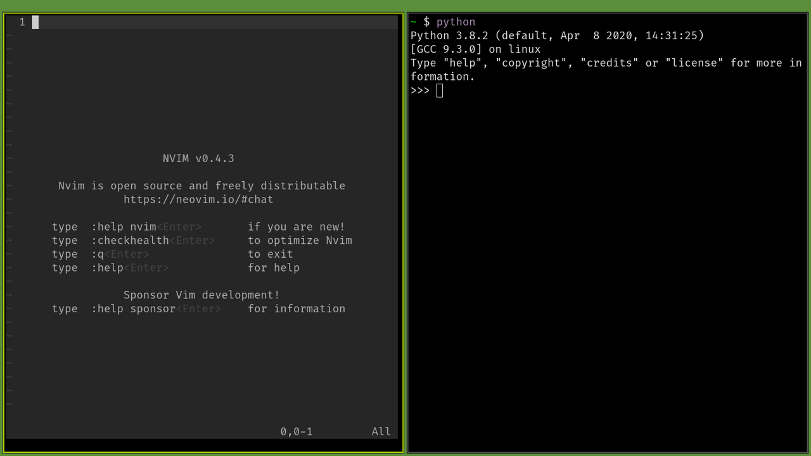

My new Arch set-up
This post is about my new Arch set-up on my old Lenovo laptop. Okay this is not exactly a new Arch set-up because I have installed Arch once before many years ago. I was interested in a Linux installation where it is just barebones enough for me to get it up and running without having to deal with building from source or missing drivers.
I have also been using Manjaro on and off for some time. I really like the distro very much and it is based off Arch as well. Prior to this build, I was playing around with AntiX. I think it is quite user friendly however I think I prefer rolling release for my Linux and I really like Arch as a distro.
So what's new in this build, you might ask? Like I mentioned, I have used Linux on and off for the past many years but somehow, it didn't really stick to me. I feel like there is too much customization and tweaks that can be done. All these makes my learning slope a bit steeper. On and off, I have been trying tiling managers, editors and nothing sticks until this build.
Anyways I have put together a useable stack that I deem worthy to work in and I would like to share what it is. There are various Youtube channels that I follow that discuss these ideas and it is these ideas that set me forth on my journey to build something I would enjoy working in.
Firstly, the hardware is a (very old) Lenovo Thinkpad from 2009. I am really impressed with Lenovo, good job there. I install the latest Arch Linux from USB drive. I had to reboot the distro from my USB a few times because I didn't install some of the driver for my WiFi card. Luckily this was as easy as booting off the USB and chrooting into my machine and installing those packages all thanks to an Arch install guide I found.
After the WiFi packages got installed, the next thing to do was to set up a desktop environment for my usage. I wanted to give myself another shot at a tiling manager. There are people who are against the idea of a tiling manager and people who like the idea. Personally I think choosing the right tool for the job is more important. I would like to give tiling manager another go. Before I set up the tiling manager, I would need to install Xorg and set it up.
I make a copy of the .xinitrc file and added some configuration of my own, namely using xrandr to turn off my primary monitor, as it is busted and I am using an external monitor. After that I added the lines to run the respective tiling manager.
On my list right now, I have a few that I want to try. I installed all of them and I give them a go. The following are the ones I have tried, Awesome, dwm, herbstluftwm, i3, spectrwm (somehow crashed upon run). I really like dwm as the config seems to be easiest. Awesome's configuration seems to be very flexible as it is lua based.
Interestingly I went with herbstluftwm. Honestly I have not heard of this manager and initially it was not as good. In fact, I feel that the whole usage is very intuitive.
On top of that I have installed the following,
fish - Shell
maim - Taking screenshot
Neovim - Editing
Qutebrowser - Web browser
(suckless) Simple Terminal - Terminal Emulator
for my daily usage. I will add on more stuff as I need.
As for managing my dot files, I found a few solutions online. In the end, I went with the GNU Stow approach to managing my dotfiles. It is actually very simple to set-up. The article to set-up can be found here.
Showing off my current build.
Happy hacking !!!